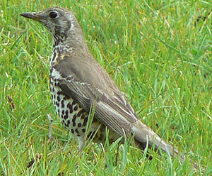
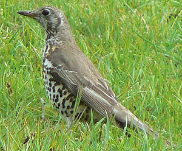

| Mistle Thrush | |
|---|---|
|  | |
| Conservation status | |
|
Mistletoe Thrush |
| Mistle Thrush | |
|---|---|
|  | |
| Conservation status | |
|
Mistletoe Thrush |
The Mistle Thrush (Turdus viscivorus) is a member of the thrush family Turdidae.
It is found in open woods and cultivated land over all of Europe and much of Asia. Many northern birds move south during the winter, with migrating birds sometimes forming small flocks.
The Mistle Thrush averages about 27 cm long, larger than the similar Song Thrush. The sexes are similar, with plain greyish brown backs and neatly round-spotted underparts. The breast has much less buff than the Song Thrush.
It is omnivorous, eating insects, worms and berries. A Mistle Thrush will defend a berry-bearing tree against other thrushes in winter. Mistletoe berries are amongst its diet.
This species was first described by Linnaeus in his Systema naturae in 1758 under its current scientific name.[2] The English name refers to its mistletoe eating, as does the scientific name, which is derived from the Latin words Turdus, "thrush", and viscivorus meaning "mistletoe eater".
A recent molecular study places the Mistle Thrush's closest relatives as the similarly plumaged Song Thrush (T. philomelos) and the Chinese Thrush (T. mupinensis), all three species early offshoots from the main Turdus radiation around the world, and hence only distantly related to other European species such as the Common Blackbird (T. merula).[3]
They nest in trees, laying several eggs in a neat cup-shaped nest lined with grass.
The male sings its loud melodious song from a tree, rooftop or other elevated perch, often during bad weather or at night, and starting relatively early in the spring — hence the Mistle Thrush's old name of "Stormcock". The song is like a harder and simpler version of the Blackbird's. The alarm call is said to sound like a football rattle (a form of musical ratchet) or machine gun.

{kind=link}